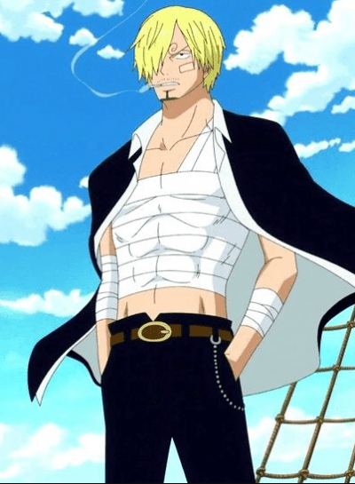

Sanji is a world class frycook for the infamous pirate crew, the Strawhats. He began his cooking journey at the restaurant, Baratie, which is located in East Blue. Sanji's dream is to discover the All Blue, a special and mysterious sea home to the most exotic sea creatures. Sanji wishes to cook some of the best fish and meals from the All Blue! Many refer to Sanji as someone who is cool, calm and composed. He is able to handle himself in tough situations using his powerful kicks. However, Sanji's biggest weakness is beautiful women!
